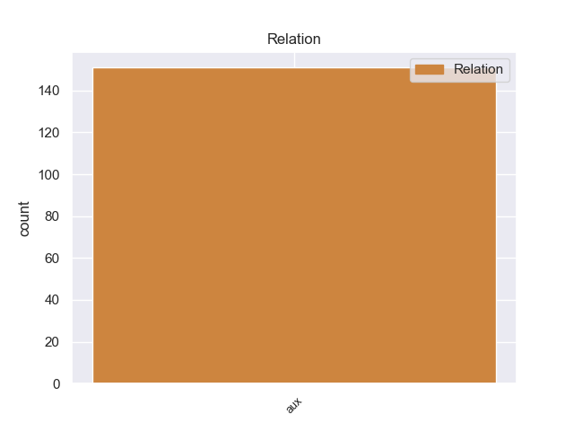
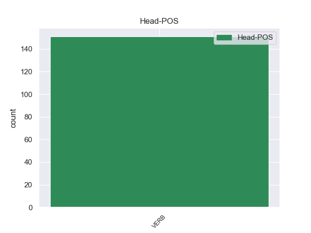
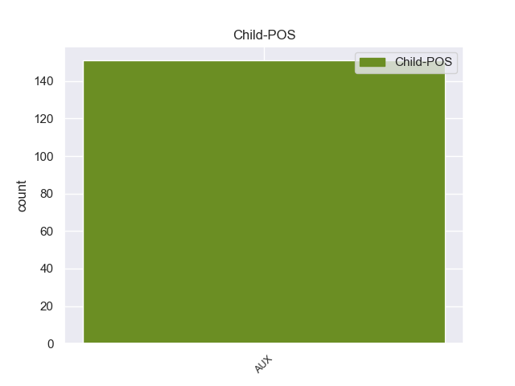

Distribution of features within this leaf



No agree examples found.
Disagree Examples:
1 El _ _ _ _ 0 _ _ _
2 álbum _ _ _ _ 0 _ _ _
3 deriva _ _ _ _ 0 _ _ _
4 de _ _ _ _ 0 _ _ _
5 un _ _ _ _ 0 _ _ _
6 deseo _ _ _ _ 0 _ _ _
7 por _ _ _ _ 0 _ _ _
8 parte _ _ _ _ 0 _ _ _
9 tanto _ _ _ _ 0 _ _ _
10 de _ _ _ _ 0 _ _ _
11 Neil _ _ _ _ 0 _ _ _
12 Young _ _ _ _ 0 _ _ _
13 como _ _ _ _ 0 _ _ _
14 de _ _ _ _ 0 _ _ _
15 Stephen _ _ _ _ 0 _ _ _
16 Stills _ _ _ _ 0 _ _ _
17 de _ _ _ _ 0 _ _ _
18 completar _ _ _ _ 0 _ _ _
19 lo _ _ _ _ 0 _ _ _
20 que _ _ _ _ 0 _ _ _
21 habían haber AUX _ Mood=Ind|Number=Plur|Person=3|Tense=Imp|VerbForm=Fin 22 aux _ _
22 abandonado abandonar VERB _ Gender=Masc|Number=Sing|Tense=Past|VerbForm=Part 0 _ _ _
23 en _ _ _ _ 0 _ _ _
24 su _ _ _ _ 0 _ _ _
25 época _ _ _ _ 0 _ _ _
26 de _ _ _ _ 0 _ _ _
27 experimentación _ _ _ _ 0 _ _ _
28 con _ _ _ _ 0 _ _ _
29 Buffalo _ _ _ _ 0 _ _ _
30 Springfield _ _ _ _ 0 _ _ _
31 . _ _ _ _ 0 _ _ _
1 La _ _ _ _ 0 _ _ _
2 escena _ _ _ _ 0 _ _ _
3 " _ _ _ _ 0 _ _ _
4 Enfin _ _ _ _ 0 _ _ _
5 , _ _ _ _ 0 _ _ _
6 il _ _ _ _ 0 _ _ _
7 est _ _ _ _ 0 _ _ _
8 en _ _ _ _ 0 _ _ _
9 ma _ _ _ _ 0 _ _ _
10 puissance _ _ _ _ 0 _ _ _
11 " _ _ _ _ 0 _ _ _
12 , _ _ _ _ 0 _ _ _
13 es _ _ _ _ 0 _ _ _
14 un _ _ _ _ 0 _ _ _
15 manifiesto _ _ _ _ 0 _ _ _
16 de _ _ _ _ 0 _ _ _
17 que _ _ _ _ 0 _ _ _
18 lo _ _ _ _ 0 _ _ _
19 " _ _ _ _ 0 _ _ _
20 maravilloso _ _ _ _ 0 _ _ _
21 " _ _ _ _ 0 _ _ _
22 no _ _ _ _ 0 _ _ _
23 era _ _ _ _ 0 _ _ _
24 lo _ _ _ _ 0 _ _ _
25 único _ _ _ _ 0 _ _ _
26 que _ _ _ _ 0 _ _ _
27 el _ _ _ _ 0 _ _ _
28 espectáculo _ _ _ _ 0 _ _ _
29 operístico _ _ _ _ 0 _ _ _
30 añadía _ _ _ _ 0 _ _ _
31 a _ _ _ _ 0 _ _ _
32 la _ _ _ _ 0 _ _ _
33 tragedia _ _ _ _ 0 _ _ _
34 y _ _ _ _ 0 _ _ _
35 de _ _ _ _ 0 _ _ _
36 que _ _ _ _ 0 _ _ _
37 lo _ _ _ _ 0 _ _ _
38 sublime _ _ _ _ 0 _ _ _
39 puede poder AUX _ Mood=Ind|Number=Sing|Person=3|Tense=Pres|VerbForm=Fin 41 aux _ _
40 ser _ _ _ _ 0 _ _ _
41 conseguido conseguir VERB _ Gender=Masc|Number=Sing|Tense=Past|VerbForm=Part 0 _ _ _
42 a _ _ _ _ 0 _ _ _
43 través _ _ _ _ 0 _ _ _
44 de _ _ _ _ 0 _ _ _
45 las _ _ _ _ 0 _ _ _
46 inflexiones _ _ _ _ 0 _ _ _
47 de _ _ _ _ 0 _ _ _
48 la _ _ _ _ 0 _ _ _
49 voz _ _ _ _ 0 _ _ _
50 y _ _ _ _ 0 _ _ _
51 sin _ _ _ _ 0 _ _ _
52 necesidad _ _ _ _ 0 _ _ _
53 de _ _ _ _ 0 _ _ _
54 aparato _ _ _ _ 0 _ _ _
55 visual _ _ _ _ 0 _ _ _
56 : _ _ _ _ 0 _ _ _
57 el _ _ _ _ 0 _ _ _
58 movimiento _ _ _ _ 0 _ _ _
59 escénico _ _ _ _ 0 _ _ _
60 es _ _ _ _ 0 _ _ _
61 nulo _ _ _ _ 0 _ _ _
62 hasta _ _ _ _ 0 _ _ _
63 que _ _ _ _ 0 _ _ _
64 el _ _ _ _ 0 _ _ _
65 dilema _ _ _ _ 0 _ _ _
66 interno _ _ _ _ 0 _ _ _
67 de _ _ _ _ 0 _ _ _
68 Armida _ _ _ _ 0 _ _ _
69 se _ _ _ _ 0 _ _ _
70 resuelve _ _ _ _ 0 _ _ _
71 y _ _ _ _ 0 _ _ _
72 vuelve _ _ _ _ 0 _ _ _
73 en _ _ _ _ 0 _ _ _
74 sí _ _ _ _ 0 _ _ _
75 para _ _ _ _ 0 _ _ _
76 invocar _ _ _ _ 0 _ _ _
77 a _ _ _ _ 0 _ _ _
78 sus _ _ _ _ 0 _ _ _
79 secuaces _ _ _ _ 0 _ _ _
80 en _ _ _ _ 0 _ _ _
81 un _ _ _ _ 0 _ _ _
82 aria _ _ _ _ 0 _ _ _
83 estrófica _ _ _ _ 0 _ _ _
84 ( _ _ _ _ 0 _ _ _
85 " _ _ _ _ 0 _ _ _
86 Venez _ _ _ _ 0 _ _ _
87 , _ _ _ _ 0 _ _ _
88 venez _ _ _ _ 0 _ _ _
89 , _ _ _ _ 0 _ _ _
90 secondez _ _ _ _ 0 _ _ _
91 mes _ _ _ _ 0 _ _ _
92 désirs _ _ _ _ 0 _ _ _
93 " _ _ _ _ 0 _ _ _
94 ) _ _ _ _ 0 _ _ _
95 , _ _ _ _ 0 _ _ _
96 quienes _ _ _ _ 0 _ _ _
97 se _ _ _ _ 0 _ _ _
98 llevan _ _ _ _ 0 _ _ _
99 a _ _ _ _ 0 _ _ _
100 Reinaldo _ _ _ _ 0 _ _ _
101 a _ _ _ _ 0 _ _ _
102 su _ _ _ _ 0 _ _ _
103 palacio _ _ _ _ 0 _ _ _
104 . _ _ _ _ 0 _ _ _
1 En _ _ _ _ 0 _ _ _
2 el _ _ _ _ 0 _ _ _
3 disco _ _ _ _ 0 _ _ _
4 han haber AUX _ Mood=Ind|Number=Plur|Person=3|Tense=Pres|VerbForm=Fin 5 aux _ _
5 volcado volcar VERB _ Gender=Masc|Number=Sing|Tense=Past|VerbForm=Part 0 _ _ _
6 sus _ _ _ _ 0 _ _ _
7 influencias _ _ _ _ 0 _ _ _
8 de _ _ _ _ 0 _ _ _
9 indie _ _ _ _ 0 _ _ _
10 pop _ _ _ _ 0 _ _ _
11 , _ _ _ _ 0 _ _ _
12 rock _ _ _ _ 0 _ _ _
13 español _ _ _ _ 0 _ _ _
14 y _ _ _ _ 0 _ _ _
15 estilo _ _ _ _ 0 _ _ _
16 británico _ _ _ _ 0 _ _ _
17 , _ _ _ _ 0 _ _ _
18 melodías _ _ _ _ 0 _ _ _
19 pop _ _ _ _ 0 _ _ _
20 con _ _ _ _ 0 _ _ _
21 sonidos _ _ _ _ 0 _ _ _
22 crudos _ _ _ _ 0 _ _ _
23 y _ _ _ _ 0 _ _ _
24 contundentes _ _ _ _ 0 _ _ _
25 , _ _ _ _ 0 _ _ _
26 que _ _ _ _ 0 _ _ _
27 quedan _ _ _ _ 0 _ _ _
28 plasmados _ _ _ _ 0 _ _ _
29 en _ _ _ _ 0 _ _ _
30 una _ _ _ _ 0 _ _ _
31 colección _ _ _ _ 0 _ _ _
32 de _ _ _ _ 0 _ _ _
33 diez _ _ _ _ 0 _ _ _
34 canciones _ _ _ _ 0 _ _ _
35 cuidadas _ _ _ _ 0 _ _ _
36 hasta _ _ _ _ 0 _ _ _
37 el _ _ _ _ 0 _ _ _
38 más _ _ _ _ 0 _ _ _
39 mínimo _ _ _ _ 0 _ _ _
40 detalle _ _ _ _ 0 _ _ _
41 y _ _ _ _ 0 _ _ _
42 con _ _ _ _ 0 _ _ _
43 una _ _ _ _ 0 _ _ _
44 producción _ _ _ _ 0 _ _ _
45 de _ _ _ _ 0 _ _ _
46 alto _ _ _ _ 0 _ _ _
47 nivel _ _ _ _ 0 _ _ _
48 . _ _ _ _ 0 _ _ _
1 Sin _ _ _ _ 0 _ _ _
2 embargo _ _ _ _ 0 _ _ _
3 , _ _ _ _ 0 _ _ _
4 como _ _ _ _ 0 _ _ _
5 no _ _ _ _ 0 _ _ _
6 será _ _ _ _ 0 _ _ _
7 retroactiva _ _ _ _ 0 _ _ _
8 a _ _ _ _ 0 _ _ _
9 el _ _ _ _ 0 _ _ _
10 1 _ _ _ _ 0 _ _ _
11 de _ _ _ _ 0 _ _ _
12 enero _ _ _ _ 0 _ _ _
13 , _ _ _ _ 0 _ _ _
14 aquellos _ _ _ _ 0 _ _ _
15 empleados _ _ _ _ 0 _ _ _
16 que _ _ _ _ 0 _ _ _
17 hayan haber AUX _ Mood=Sub|Number=Plur|Person=3|Tense=Pres|VerbForm=Fin 18 aux _ _
18 tenidos tenido VERB _ Gender=Masc|Number=Plur|Tense=Past|VerbForm=Part 0 _ _ _
19 deducciones _ _ _ _ 0 _ _ _
20 en _ _ _ _ 0 _ _ _
21 el _ _ _ _ 0 _ _ _
22 primer _ _ _ _ 0 _ _ _
23 semestre _ _ _ _ 0 _ _ _
24 no _ _ _ _ 0 _ _ _
25 serán _ _ _ _ 0 _ _ _
26 beneficiados _ _ _ _ 0 _ _ _
27 con _ _ _ _ 0 _ _ _
28 los _ _ _ _ 0 _ _ _
29 reintegros _ _ _ _ 0 _ _ _
30 . _ _ _ _ 0 _ _ _
1 El _ _ _ _ 0 _ _ _
2 centrocampista _ _ _ _ 0 _ _ _
3 portugués _ _ _ _ 0 _ _ _
4 Tiago _ _ _ _ 0 _ _ _
5 ha haber AUX _ Mood=Ind|Number=Sing|Person=3|Tense=Pres|VerbForm=Fin 6 aux _ _
6 conseguido conseguir VERB _ Gender=Masc|Number=Sing|Tense=Past|VerbForm=Part 0 _ _ _
7 desvincular _ _ _ _ 0 _ _ _
8 se _ _ _ _ 0 _ _ _
9 de _ _ _ _ 0 _ _ _
10 la _ _ _ _ 0 _ _ _
11 Juventus _ _ _ _ 0 _ _ _
12 de _ _ _ _ 0 _ _ _
13 Turín _ _ _ _ 0 _ _ _
14 y _ _ _ _ 0 _ _ _
15 será _ _ _ _ 0 _ _ _
16 definitivamente _ _ _ _ 0 _ _ _
17 de _ _ _ _ 0 _ _ _
18 el _ _ _ _ 0 _ _ _
19 Atlético _ _ _ _ 0 _ _ _
20 de _ _ _ _ 0 _ _ _
21 Madrid _ _ _ _ 0 _ _ _
22 en _ _ _ _ 0 _ _ _
23 las _ _ _ _ 0 _ _ _
24 próximas _ _ _ _ 0 _ _ _
25 horas _ _ _ _ 0 _ _ _
26 . _ _ _ _ 0 _ _ _